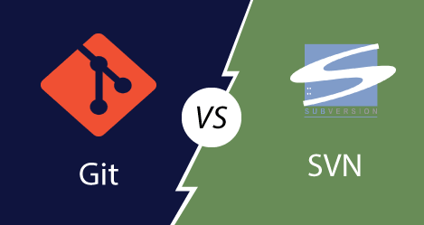
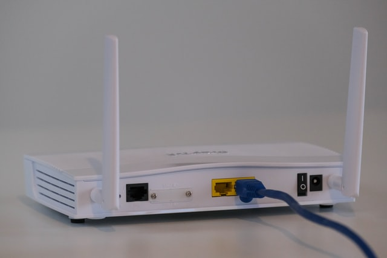

Descripción y elementos que se requieren para el teletrabajo
En este documento estudiaremos la descripción de plataformas que se utilizarían
para implementar teletrabajo en una empresa.
Qué elementos se requieren para implementar teletrabajo,
también veremos que leyes regulan este tipo de trabajo en Colombia.
Descripción de plataformas para realizar teletrabajo
En este enunciado realizaremos una pequeña descripcion de algunas de las plataformas
que se requieren para realizar el teletrabajo, sabemos que hoy en día y más, en el transcurso
de la pandemia relacionada con el Covid-19, el teletrabajo a aumentado en gran porcentaje en el trancurso de los ultimos años
a continuacion veremos algunas de las plataformas para ayudarnos en el desarrollo de las actividades laborales desde nuestros
hogares.
Plataformas Video conferencia
Estas nos ayudan a comunicarnos con nuestro equipo de trabajo, sea a través de llamada o de conversación por chat, facilitando la interacción con nuestros compañeros en la solución de proyectos en los cuales todos no veamos involucrados, allí podemos encontrar varias como lo son Teams, Skype, Zoom entre otras.
Gestión de proyectos
Dichas herramientas nos ayudan a organizarnos y gestionar nuestros proyectos otorgando labores y realizando un control de cada estado de las tareas que estamos desarrolando, asi logramos optimizar tiempos de entregas como el rendimiento de cada uno de los integrantes del equipo,
algunas de estas herramientas son: Trello, Asana, Microsoft proyect, Flask entre otras.

Control de Versiones
Esta Herramientas nos ayudan a trabajar de una forma mu agradable en equipo ya que un o varias personas pueden realizar cambios a documentacion los cuales se encuentren almacenados en un repositorio el cual pertenece a una organizacion, una ventaja de estas herramientas es que podemos crear ramas y asi mismo poder asiganrle los usuarios a cada una de estas ramas en estos podemos encontrar a GIT o SubversionSVN
Implementos para implementar el teletrabajo
En este articulo veremos los implementos que requerimos para implementar el teletrabajo,
Implementar el teletrabajo nos una tarea facil ya que requerimos de elementos que nos ayuden a desarrollarlo de una manera que sea amena para la persona que lo realiza como para la empresa, empezando por la dicsiplina que pone cada ser en la realizacion de sus tareas.
Para realizar dicha implementacion vamos a realizar un listado de ciertos objetos y herramientas que nos permitan realizar las funciones delegadas por la organización.

Conectividad
Para realizar Teletrabajo siempre vamos a requerir de señal de internet ya que si en esta no podriamos conectarnos a escritorios remotos, VPNs, repositorios entre otros, estos servicios son ofrecidos por compañias que ofrecen servicios de internet como claro, etb, epm entre otras compañias.
Es indispensable tener una gran señal de internet que solvente nuestras necesidades ya que al conectarnos a web conferencias o vpns estos sucesos pueden requerir de una muy buena velocidad del internet.
Equipo de computo y oficina
Requerimos de un computador o medio tecnológico que nos permita realizar nuestras labores, verificando las condiciones del mismo y que cumpla con los requerimientos para desempeñar las funciones delegadas por la organización, como lo son espacio en disco, memoria RAM, tarjeta de video, micrófono, cámara etc.
Y un buen equipo de oficina que nos ayude a un buen desempeño de nuestras funciones como lo que es el escritorio y una silla ergonómica para evitar lesiones de espalda y herramientas que nos facilitan que el equipo de computo se encuentre a la altura de nuestros ojos.
Leyes regulan el teletrabajo en Colombia

La legislación vigente en Colombia en materia de teletrabajo es amplia y pretende abarcar todos los ámbitos posibles en materia de protección de los derechos de los trabajadores. Conozca las normas que la reglamentan actualmente.
El Teletrabajo en Colombia se encuentra regulado por la Ley 1221 del 2008 y el decreto 884 del 2012 que la reglamenta.
Ley 1221 de 2008:
Establece el reconocimiento del Teletrabajo en Colombia como modalidad laboral en sus formas de aplicación, las bases para la generación de una política pública de fomento al teletrabajo y una política pública de teletrabajo para la población vulnerable. Crea la Red Nacional de Fomento al Teletrabajo, con el fin de promover y difundir esta práctica en el país e incluye las garantías laborales, sindicales y de seguridad social para los Teletrabajadores.
Decreto 884 de 2012:
Especifica las condiciones laborales que rigen el teletrabajo en relación de dependencia, las relaciones entre empleadores y Teletrabajadores, las obligaciones para entidades públicas y privadas, las ARLs y la Red de Fomento para el teletrabajo. Así mismo establece los principios de voluntariedad, igualdad y reversibilidad que aplican para el modelo.
Resolución 2886 de 2012:
Define las entidades que hacen parte de la Red de Fomento del Teletrabajo y las obligaciones que les compete.